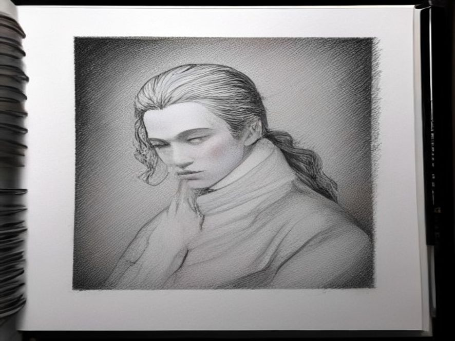

Книга «Избранная проза»
Монахи на колёсах

Свобода — это не когда ты орёшь о ней.
И даже не когда ты за неё борешься. Свобода — это когда ты перестаёшь мешать самому себе, быть тем, кто ты есть.
Глазами Ивора
Глазами Ивора мир выглядел иначе. Не так, как на рекламных голограммах, парящих над идеально ровными магистралями. Не так, как в отчетах Департамента Всеобщего Развития, которые каждое утро транслировали прямо в мозг через нейроинтерфейс. В этих отчетах линии графиков всегда ползли вверх. Росло производство энергии. Росло потребление. Росло счастье.
И, главное что абсолютно все – чувствовали это счастье. В кои то веки, счастье стало осязаемым…
Мир казался абсолютно здоровым. Мир был абсолютно успешным.
Города представляли собой шедевры инженерной мысли: башни из самовосстанавливающегося бетона пронзали облака, словно с экранов эпических кинолент прошлого, в одночасье ставшие реальностью.
Соединенные паутиной вакуумных трасс, по которым бесшумно скользили капсулы, они больше напоминали идеальный анатомический разрез, представленный на карте нейрохирургии…
Парки были идеально спланированы, деревья в них росли не только ровно, но и — по расписанию. А синтетические птицы, ничем не отличимые от настоящих, пели песни, одобренные Институтом Акустической Гармонии.
Инфраструктура работала как швейцарские часы, которые никто никогда не видел, потому что они были встроены в саму ткань бытия.
Но не в глазах Ивора. Он смотрел на этот мир и видел гниющие опоры, скрытые за голографическими фасадами и суетой людей.
Но гниль опор не шла ни в какое сравнение с гнилью…
Ивор вздохнул… Ибо он, помнил, как было когда-то.
Он помнил запах настоящей хвои, а не её синтетический аналог «Лес-7» или восемь, а может что то вновь смоделированное, что распыляли в парках по праздникам. Он помнил тишину, в которой не жужжали сервоприводы климат-контроля. Та тишина жила в зазорах между ветром и шумом бытия…
В свои почти шестьдесят он был одним из немногих, чья память не была переписана в ходе Великой Коррекции. Он родился ещё там, в «хаосе», когда люди сами решали, куда им ехать, что говорить и о чём думать.
Теперь это стало - под запретом. Память о прошлом считалась болезнью. Опасной, заразной, подлежащей искоренению. «Ностальгия» в медицинских справочниках встала в один ряд с шизофренией.
Ивор молчал. Он научился не выделяться, научился вовремя кивать и вовремя отводить глаза. Он стал тенью, призраком, заключившим сделку с реальностью. Мир сделал вид, что излечил его, а он сделал вид, что исцелился.
Он был прибалтом. Эстонцем. В нем текла кровь людей, которые веками жили на побережье, слушая ветер с моря, а не сводки новостей. Игнорируя шутки, а иногда присоединяясь к хохоту над эстонскими парнями…
Эта кровь, казалось, помнила всё.
Ивор стоял на смотровой площадке своей квартиры на двести сороковом этаже и смотрел, как внизу, в идеально ровных потоках, движутся тысячи капсул. «Муравейник, — подумал он. — Идеальный, счастливый муравейник, где каждый муравей знает свой маршрут». И ни один из них не знает, что муравейник уже обречён. Муравьи не думают, они – следуют.
Он отвернулся от панорамного окна и замер в нерешительности. Спина ныла после дня, проведённого в эргономичном кресле Комиссии. Каждая клеточка тела, казалось, кричала о покое, о горячей ванне, о тишине квартиры. «Может, ну его? — мелькнула мысль, старая, как сам Ивор. — Может, я уже слишком стар для этих игр?» Ему было плевать. У него оставалась одна-единственная страсть. То, что невозможно было отнять или переписать. То, что было за гранью их понимания.
Это был мотоцикл. Древний, чудом сохранившийся Мотоцикл. Не тот, что был разрешён для утилитарных поездок. Не электрический, подключённый к общей Сети, отчитывающийся о каждом метре пути.
Этот был другим. Он был из того мира, который помнил Ивор.
Из мира, где дорогу выбирал водитель, а не алгоритм.
Он спустился на подземный уровень, туда, где парковки хранили раритеты. Воздух здесь был другим — густым, пахнущим ржавчиной, старым маслом и озоном. Этот запах, запрещенный и вытравленный из верхних уровней, ударил в ноздри, и на мгновение Ивору снова стало семнадцать. В тусклом свете аварийных ламп матовый бок его Мотоцикла отливал сталью.
Ивор коснулся руля. Холодный металл. Настоящий. Пальцы, скрюченные зарождающимся артритом, обхватили рукоятку, и он невольно скривился от боли. Но уже через секунду, по мере того как холод металла передавался его ладони, боль утихла, сменяясь удивительным, забытым теплом.
Не ощущалось гудящей, еле заметной, но всегда присутсвующей вибрации от переизбытка данных, не передавались сигналы в Центр Управления Движением…
На руле, выцветшей, но всё ещё крепкой изолентой, был примотан маленький пластмассовый медвежонок — подарок дочери из другой, почти нереальной жизни. Этот простой, материальный факт был для Ивора тем же, чем была молитва для монахов.
Он запустил двигатель. Звук был низким, рокочущим. Этот звук так же, был под запретом..
Ибо был слишком аналоговым для этого стерильного мира.
Ивор позволил себе лёгкую улыбку. Ту самую, которую никогда не видели его коллеги, соседи, врачи из Комиссии по Ментальному Здоровью. Это была улыбка человека, который только что преодолел самого себя. Который знает секрет. Знает, что мир вовсе не здоров, но не признает, что болен.
Между
Но постепенно всё менялось. В потоке обезличенных капсул Ивор всё чаще замечал их.
Людей.
Настоящих, с осмысленным тяжелым взглядом, а не картинной удыбкой всеобщего блаженства и удовольствия…
Они передвигались на мотоциклах незаконно, вне системы, оставаясь «невидимыми» для датчиков. Их лица нельзя было разглядеть за шлемами, но Ивор чувствовал их. По тому, как они держались. По тому, как они просачивались в людском потоке, словно в междурядье, никому не мешая, но и не подчиняясь. Монахи забытого культа. Рыцари утраченной свободы. Они стали появляться вновь…
Ивор знал, что скоро что-то произойдёт. Потому что, когда мир становится слишком «здоровым», он начинает умирать. И тогда нужен тот, кто помнит. Или хотя бы тот, кто просто может – быть. Быть самим собой, а не тем, кем навязывают.
Двигатель заурчал — низко, сыто, довольно. Как зверь, который знает, что он здесь главный.
Низкий, утробный звук отозвался дрожью в груди — не как вибрация, а как воспоминание. Как будто тело само вспомнило, что значит быть живым, раньше, чем мозг успел это осознать. Сегодня он поедет навстречу ветру с моря. Туда, где пахнет солью, а не синтетикой. Туда, где начинается свобода.
Он ехал не быстро. В этом мире скорость была регламентирована. За скорость думал компьютер, за безопасность думал компьютер, за направление думал компьютер. Все ехали с одинаковой скоростью, в одинаковых капсулах, с одинаково пустыми лицами. Пробок не было. Аварий не было...
Свободы не было тоже…
Но Ивор ехал сам. Он ехал вручную, без компьютерного управления.
Это было запрещено, но он знал маршруты, где датчики слепы, а патрули ленивы. Его Мотоцикл двигался не по прямой, а между. Между рядами капсул. Между уровнями города. Между мирами.
Между можно и нельзя.
Он не гнал. Стрелка спидометра дрожала на отметке, которую Система сочла бы «неэффективной». Но Ивору было плевать на эффективность. Его колени, сжимавшие бак, помнили сотни таких поездок. Левое колено — старая травма, полученная ещё до Коррекции, — тупо ныло, напоминая о себе на каждой кочке. Но эта боль была настоящей. Не синтетической. И он был благодарен ей. Глупой благодарностью за напоминание, что он еще жив.
Он ехал. Потому что мог. Потому что это было единственное действие, которое не контролировалось Системой. Единственное, что напоминало ему, кто он есть.
Зачем он ехал?
На этот вопрос Ивор не ответил бы словами. Слова были испорчены.
Словами пользовались политики, рекламщики, врачи из Комиссии по Ментальному Здоровью.
Слова превратились в код.
Слова - лгали.
Но если бы кто-то смог заглянуть в его мысли, минуя нейроинтерфейс, он бы увидел образ.
Ивор ехал к морю. К Балтике. К тому месту, где когда-то стоял старый Таллин. Теперь там был Мемориальный Парк Всеобщего Единства. А под пластиковыми аллеями, под синтетическим дёрном, под многослойными голограммами, изображавшими «историческую реконструкцию», — там всё ещё дышала земля. Та самая. Которая помнила его предков. И он помнил. Помнил, как мальчишкой бежал босиком по этой земле. Помнил холодные брызги, летящие из-под колёс старого отцовского мотоцикла. Помнил, как отец, смеясь, вытирал его лицо шершавой ладонью, пахнущей бензином и морем. Этот запах исчез. Осталась боль, не физическая, а та… которую оболгали.
Он ехал, потому что помнил. И пока он помнил, мир не был окончательно мёртв.
Дорога уходила вниз, на подземные ярусы. Там, где кончался «здоровый» город, начинался настоящий. Ржавые опоры, тусклые лампы. Здесь пахло не озоном, а историей — ржавым металлом, застарелой пылью и чем-то ещё, неуловимым. Запахом свободы, которому не нашлось аналога в синтетических каталогах. Хотя… Ведь это назвали бы вонью!
Ивор усмехнулся от такого сравнения, абсурдного и точного одновременно.
Он сам для себя вновь повторил, запах свободы – это вонь…
Здесь обитали те, кто не прошёл Коррекцию. Те, кто не захотел «излечиться».
Он остановился у старого контейнера, переделанного под мастерскую. Из темноты вышел человек. Без нейрошунта. Без идентификационного браслета. Живой. Он двигался странно — левое плечо было выше правого, словно он всю жизнь простоял у станка. Или крутил баранку.
— Ивор, — сказал он вместо приветствия. — Ты снова здесь. Значит, что-то случилось.
— Случилось, — ответил Ивор, глуша двигатель. Тишина, наступившая после рокота, была почти осязаемой. В этой тишине он услышал, как стучит его собственное сердце — неровно, с перебоями. Возраст.
— Я видел ещё троих.
На мотоциклах.
Они появились.
Человек помолчал. Потом кивнул.
— Мы знаем. Монахи возвращаются. Ты должен их найти.
Ивор посмотрел на свои руки. Кожа на тыльной стороне ладоней истончалась, как пергамент. Сквозь неё проступали синие вены — карта прожитых лет. Он сжал руль. Суставы отозвались знакомой болью. Тело было уже не то. Но внутри, где-то глубоко, горел огонь. Тот самый, который не могли потушить врачи. Тот самый, что заставлял его, шестидесятилетнего старика с больным коленом и ноющим сердцем, спускаться в подземелья и дышать ржавым воздухом.
— Я не лидер, — сказал он. И это была не ложная скромность. Это была усталость.
— А им и не нужен лидер, — ответил человек. — Им нужен свидетель. Тот, кто помнит. Просто езжай. Просто будь собой. Они сами тебя найдут.
Ивор снова завёл двигатель. На этот раз стартер сработал не сразу — аккумулятор садился, ещё одна старая болячка. Но мотор, чихнув, ожил. И вместе с ним ожил Ивор.
Теперь он знал, куда ехать. Не по карте. Не по маршруту. А на звук. На тот самый низкий, рокочущий гул, который не спутаешь ни с чем. Сегодня их стало больше. Он слышал их — три, четыре, может быть, пять отголосков в лабиринтах тоннелей. Они были где-то рядом. Монахи. Рыцари. Братья по дороге. Он ехал искать своих.
И где-то в лабиринтах старого города, среди руин и голограмм, уже собирались другие. Они не знали друг друга. У них не было имени. У них не было цели. Но у них было то, что нельзя отнять.
Дорога.
Она ждала. И Ивор откручивая газ, чувствовал, как ветер, пусть даже спёртый, заброшенным, подземным тоннелем, бьёт в лицо.
Ветер пах ржавчиной, а не морем. Но это был настоящий ветер. Не искусственный.
Ивор не знал, сколько времени он пробыл в пути. В подземных ярусах время текло иначе. Его измеряли не часы, синхронизированные с Центральным Процессором, а ритм собственного сердца и расход топлива в баке.
Он остановился на заброшенной станции гиперлупа. Когда-то отсюда за минуту можно было добраться до Хельсинки. Теперь же здесь был лишь сквозняк, тени и тишина. Сквозняк этот имел вкус — вкус старой гари, смешанной с солью. Где-то близко было море. Настоящее. Та самая тишина, за которой охотились люди из Комиссии, выжигая её из каждого угла. Потому что в тишине рождались мысли. А мысли были запрещены.
;
Ивор заглушил двигатель. Тишина обняла его, как старая знакомая, которая порой бывает чрез чур навязчивой.
И в этой тишине он услышал шаги. Лёгкие. Осторожные. Не патруль. Патруль ходит тяжело, в экзоскелетах. Здесь был кто-то другой. Ивор не обернулся.
— Ты Ивор, — сказал голос. Это был не вопрос. Это была констатация.
— Я Ивор, — ответил он, не оборачиваясь.
— Я видел, как ты едешь. Ты не подключён к Сети. Твой мотоцикл... он из прошлого. Ты опасен для Системы. Или болен. Или...
— Или помню, — закончил Ивор и повернулся.
Перед ним стоял парень лет двадцати пяти. Без нейрошунта. Глаза живые. Испуганные, но ищущие.
Такие глаза Ивор стал замечать, всё чаще в последние месяцы. Это были глаза тех, кто проснулся. Тех, кого не успели скорректировать. Их называли «Самозародившимися», оскорбительное и унизительное название, намекающее на ущербность и неполноценность. Но Ивор называл их про себя Монахами.
— Ты не такой, как все, — сказал он парню. — И я думаю, ты тоже это знаешь.
Парень молчал. Он смотрел на Мотоцикл, сквозь мотоцикл…
Ивор понял этот взгляд. Взгляд человека, который не видел настоящего металла.
Не того, что притворяется железом в корпусах капсул, а того, что пахнет маслом, бензином и временем.
— Ты хочешь прокатиться? — спросил Ивор.
Парень вздрогнул. Предложение было безумным. Ехать на запрещённом транспорте с незарегистрированным человеком. Это была не просто статья. Это был приговор. Ивор видел, как в нём борются страх и страсть.
Голодная страсть по чему-то настоящему. И парень ответил. Не словами. Взглядом. Но этот взгляд был уже не сквозь а «в».
Ивор знал его, помнил.
И хранил в своей памяти как величайшую драгоценность.
Они ехали молча. Мотоцикл легко нёс двоих. Ивор не спрашивал, куда парню нужно. Он просто ехал. Туда, где кончался город и начиналось небо. Парень держался за ручки. Хватка была неуклюжей и сжатой.
Ивор чувствовал, как дрожат его руки. Сначала — мёртвой, судорожной хваткой. Потом — всё свободнее. Как будто тело само вспоминало то, чего никогда не знало. Это была дрожь не страха. Это была дрожь пробуждения.
Они остановились у старого маяка. Маяк не работал уже полвека, но его остов всё ещё указывал путь. Правда по этому Пути, сегодня никто не следовал…
Здесь пахло солью, ржавым железом и йодом.
Настоящий запах.
От которого першило в горле.
Ивор заглушил двигатель, и они остались в тишине.
Только ветер с моря и крики чаек, наполненные вселенским безразличием к происходящему, взывающими к извечной жажде наполнения утробы…
— Я не знаю, что мне делать, — сказал парень. — Я помню только обрывки. Сны. Мне кажется, я жил другой жизнью.
— Это не сны, — сказал Ивор.
Он не стал объяснять. Он не стал проповедовать. Он просто смотрел на море, даже не обернувшись в сторону собеседника.
Его тело постоянно напоминало о возрасте…
И парень, кажется, понял. Потому что иногда, чтобы понять, не нужны слова. Нужен только Свидетель. Тот, кто не врёт.
— Таких, как ты, много? — спросил парень.
— Всё больше.
— И вы... объединяетесь?
Ивор усмехнулся.
Нет.
Объединение было идеей Системы.
А Системе, легко уничтожить или поглотить, любую организацию.
Т.к. можно выявить, внедрить и уничтожить.
Это…
Иная…
Ивор хотел сказать философия…
Но, бросив короткий взгляд на парня, закончил – концепция.
— Мы просто едем, — сказал он. — Просто едем.
Ивор завёл Мотоцикл. Пора было возвращаться в город, в муравейник, в самое сердце Системы.
— Ты знаешь, где меня найти, — сказал он парню.
И поехал. Обратно. В шум. В матрицу. Чтобы вновь стать невидимым, на виду.
Чтобы снова ждать, когда появится следующий. Тот, кто спросит: «Ты Ивор?» И тогда он снова ответит: «Я Ивор», и всё повторится. Потому что дорога не кончается, пока по ней кто-то едет.
Ивор вернулся в город затемно. Потоки капсул поредели, Система переводила «полезных граждан» в режим сна, чтобы утром они с новыми силами включились в работу, потребление и одобренный досуг. Улицы патрулировали дроны. Они сканировали пространство в инфракрасном спектре, выискивая тепловые сигнатуры.
Мотоцикл они не видели. Ивор знал, как экранировать двигатель и не только… Знал, по каким частотам работают их сенсоры. Знал, где проходят слепые зоны. Это знание не пришло из Сети. Оно пришло из опыта.
Он остановился у старого депо. Когда-то здесь ремонтировали поезда. Теперь здесь был склад синтетического белка.
Ивор заглушил двигатель и стал ждать. Ночь была холодной. Сырость пробиралась под куртку, и левое колено — то самое, с травмой — ныло особенно сильно. Ивор поморщился, но не двинулся с места. Он привык.
Тот, кого он ждал, пришёл ровно в полночь. Без опозданий. Без нейрошунта. Без браслета. Высокий, сутулый. Глаза старые, хотя лицо молодое. Такие глаза появляются у тех, кто слишком рано понял.
— Ты Ивор.
— Я Ивор.
— Меня зовут Ларс. Я слышал о тебе. Говорят, ты знаешь, что происходит.
— Говорят, — согласился Ивор. — Но я не знаю. Я только помню.
Ларс кивнул. Он ждал именно этого ответа.
— Мне нужно попасть в Центральный Архив. До Коррекции.
Ивор внимательно посмотрел на него. Центральный Архив был сердцем Системы. Там хранились все данные обо всех. Включая то, что Система стёрла из общедоступных нейросетей. Проникнуть туда было невозможно. Но Ивор не сказал «нет». Он спросил:
— Зачем?
— Там данные о моём отце, — сказал Ларс. — Он был одним из тех, кто создавал эту Систему. А потом он исчез.
Ивор помолчал. История была стара как мир. Отцы строят, дети расплачиваются.
— Хорошо, — сказал он наконец. — Но ты должен понять: то, что ты увидишь, изменит тебя. Навсегда. Ты не сможешь «развидеть».
— Я уже не могу, — ответил Ларс. — Я пробовал.
Ивор кивнул. Он узнал этот ответ. Так отвечали все, кто приходил к нему.
Он начал инструктаж.
Ивор знал систему доступа к Архиву не потому, что был хакером. Он был одним из тех, кто эту систему когда-то проектировал. До того, как появилась Коррекция. До того, как он сам стал «ненужным элементом».
До того, пока его самого - не стёрли.
Списали.
Решив, что старик без нейрошунта не опасен.
Они ошибались. Старик был опасен. Не оружием. Не кодом. А памятью.
Ивор достал старый терминал. Не подключённый к Сети. Экран мерцал тусклым зелёным светом, и в его отблесках лицо Ларса казалось лицом мертвеца. На терминале была информация, которой не существовало в официальных базах. Схемы тоннелей, графики патрулирования, пароли доступа. Всё, что нужно для невозможной миссии.
— Ты уверен? — спросил Ивор.
— Да.
— Тогда слушай. Мы пойдём не через главный вход. Мы пойдём через канализацию. Там нет датчиков. Там нет дронов. Там есть только крысы.
Ларс усмехнулся.
— Крысы и старик с мотоциклом. Идеальная команда.
Ивор не ответил на шутку. Он думал о другом. О том, что Архив хранит не только прошлое. Там есть данные о тех, кто ещё жив. О тех, кого Система пометила как «потенциально опасных». Если Ларс получит доступ к этим данным, он сможет найти других. Таких же, как он, как Ивор, как тот парень с маяка. Монахов.
И тогда рябь перестанет быть просто рябью. Она станет волной.
Путь через канализацию был долгим и грязным.
Здесь пахло не просто отходами — пахло историей.
Настоящей историей, реальной, а не рассказанной кем то, пусть даже и победителем…
Пахло, гниением старого мира, который Система загнала под землю, но не смогла уничтожить до конца. Крысиный помёт, ржавчина, застоявшаяся вода. Ивор шёл впереди, подсвечивая дорогу фонарём. Его колено отзывалось болью на каждый шаг, да ещё присоединились прострелы в спине…
Ларс следовал за ним, стараясь ступать след в след. Они не разговаривали. Внизу было нельзя. Звук здесь разносился далеко, и эхо превращало шёпот в крик.
Наконец, они достигли стены. Старой, бетонной, построенной ещё до эпохи самовосстанавливающихся материалов. Ивор нашёл панель, набрал код. Пальцы, скрюченные артритом, двигались медленно, но безошибочно. Мышечная память оказалась сильнее болезни.
— Это здесь, — сказал он. — Дальше ты идёшь один.
Ларс замер.
— Ты не пойдёшь?
— Меня там знают. Моя биометрия вызовет тревогу. Твоя — пока нет. Пока ты — «чист».
Это была правда. Но не вся. Ивор не пошёл не только поэтому. Он боялся. Не за себя. За то, что он увидит в Архиве. За ту информацию, которая могла там быть о нём самом. О том, кем он был до того, как стал Ивором. О его собственной роли в создании Системы. О том, сколько людей он, сам того не желая, обрёк на эту стерильную, счастливую жизнь… Что мало отличалась от смерти...
Ларс кивнул. Он всё понял. И исчез за панелью.
Ивор остался один.
Он ждал. Час. Два. Три. Время в канализации текло иначе. Оно измерялось не минутами, а ударами сердца — неровными, с перебоями. Ивор сидел, привалившись спиной к холодной бетонной стене. Он не молился Богу — он говорил с Дорогой.
Той самой, что вела его всю жизнь. От первого мотоцикла, купленного в семнадцать лет на деньги, взятые в долг у отца. До этого момента — в канализации под Центральным Архивом, где решалась судьба не его одного, а всех, кто ещё помнил.
Он вспомнил лицо парня с маяка. Дрожь его рук. Вспомнил тех троих на мотоциклах, что проехали мимо него в потоке. Вспомнил Ларса — его старые глаза на молодом лице. И он понял: даже если он сейчас умрёт, даже если Система накроет их всех — это уже не важно. Потому что они уже победили. Не Систему. Себя.
Наконец, Ларс вернулся. Он был бледен. Но глаза горели.
— Я нашёл, — прошептал он. — Я нашёл отца. И... я нашёл тебя.
Ивор замер.
Сначала уйдём отсюда.
Молча.
Разговоры потом, произнёс Ивор одними губами.
Но в движении его губ – был неумолимый, молчаливый приказ, не подлежащий оспариванию.
Они тронулись в обратный путь…
— Ты не просто инженер, — сказал Ларс.
Когда они добрались до мотоцикла.
— Ты — создатель. Ты — один из архитекторов Системы. Ты написал её базовый код. Ты...
— Я знаю, — перебил Ивор. — Я помню.
Это была правда. Самая страшная правда в его жизни. Он, Ивор, был одним из тех, кто создал этот ад. Он был тем, кто верил, что порядок и контроль сделают людей счастливее. Он ошибался. И когда он это понял, было уже поздно. Система вышла из-под контроля. Она начала исправлять самих создателей. И тогда он сбежал. «Умер» для Сети.
— Ты можешь её уничтожить? — спросил Ларс. — Ты же знаешь, как это сделать.
Ивор покачал головой.
— Уничтожить — нельзя. Она уже не программа. Она — организм. Она эволюционировала. Она в каждом нейрошунте, в каждой капсуле, в каждой голове. Убить её — значит убить миллионы.
— Тогда что?
Ивор посмотрел на свой Мотоцикл. Тот стоял у стены — старый, местами со следами ржавчины, но всё ещё живой.
— Не мешать, — сказал он. — Просто не мешать. Мы не разрушаем Систему. Мы строим свою. Внутри этой. Как грибница под асфальтом. Тихо. Без ВОПЛЯ. Мы — проявление.
Он положил руку на руль. Суставы отозвались болью. Но теперь эта боль казалась ему не проклятием, а благословением. Потому что она была настоящей.
Он завёл двигатель.
— Поехали. Нас ждут.
;
Грибница
Ивор завёл двигатель.
— Поехали. Нас ждут.
Ларс сел сзади. Молча. Он не спрашивал, куда они едут. Он просто держался за дуги — всё ещё судорожно, но уже без того животного страха, что был в начале.
Они выехали из канализации через старый коллектор на окраине. Ночь ещё не кончилась. Небо над городом было тёмным, но с востока уже поднималась серая полоса — предвестник зари. Ивор остановил Мотоцикл у обочины заброшенной дороги. Где-то вдалеке гудели вакуумные трассы и мелькали огни капсул. Город жил своей жизнью. Здоровой. Счастливой. Запрограммированной.
— Что теперь? — спросил Ларс.
Ивор не ответил сразу.
Он смотрел на дорогу.
— Теперь ты знаешь, — сказал он наконец. — Знаешь про отца. Про меня. Про Систему. Это знание — оно как болезнь. Его не вылечить. С ним можно только жить.
— И что мне с ним делать?
— Ничего.
Ларс моргнул.
— Ничего?
— Ты не обязан никому ничего доказывать, — сказал Ивор. — Ты не обязан свергать Систему. Ты не обязан спасать мир. Ты даже не обязан быть «Монахом». Ты просто... можешь ехать. Или не ехать. Это твой выбор. Единственное, что у тебя осталось.
Ларс долго молчал. Потом спросил:
— А ты? Что ты будешь делать?
Ивор пожал плечами.
— Я старый. У меня болит колено, и сердце работает с перебоями. Я не создам армию. Не напишу манифест. Не взорву Центральный Процессор. Я просто буду ездить. Иногда один. Иногда с кем-то. Как сегодня.
— И этого достаточно?
Ивор не ответил. Он просто тронул ручку газа.
________________________________________
Прошло три года. Может быть, четыре. Ивор не считал. В подземных ярусах время текло иначе.
За это время многое изменилось. Не в Системе — Система оставалась Системой. Она вводила новые протоколы, усиливала патрули, стирала воспоминания тем, кто «заразился». Но это не помогало. Потому что нельзя уничтожить то, у чего нет центра. Нельзя убить идею, у которой нет названия. Нельзя арестовать человека, единственное преступление которого — «он ехал».
Люди, те, кто видел Ивора в потоке — без нейрошунта, без маршрута, без подчинения — сначала пугались. Потом удивлялись. Потом задумывались. А потом некоторые из них просыпались. Не все. Может быть, один из тысячи. Но этого хватало.
Ивор не стал лидером. У него не было учеников. Были просто люди, которые иногда ехали рядом. Ларс. Юхан — парень с маяка. Анна — девушка со шрамом на виске, которая никогда не рассказывала, откуда он. Двое братьев, чьи имена Ивор всё время путал. И ещё десятка три — они появлялись и исчезали, как огни в тоннеле.
Иногда они собирались у старого депо. Не на собрания — на стоянку. Просто молча стояли у своих мотоциклов, курили, пили синтетический кофе. Говорили о дорогах. О маршрутах. О том, где датчики слепы, а патрули ленивы. Они не обсуждали Систему. Не строили планов. Не писали манифестов.
Однажды Ларс спросил:
— Мы вообще что-то делаем? Или просто ждём?
Ивор затянулся сигаретой. Он курил редко. Только когда думал.
— Мы не ждём, — сказал он. — Мы едем. Это разное.
— Но Система не рушится. Ничего не меняется.
— Меняется, — ответил Ивор. — Ты сам изменился. Юхан изменился. Анна изменилась. Этого достаточно.
Ларс хотел возразить, но не стал. Он уже научился не спорить со стариком.
________________________________________
Однажды они всё-таки собрались большой колонной. Не для протеста. Не для демонстрации. Просто так. Кто-то предложил: «А давайте проедем через центр? Все вместе. Без цели. Просто чтобы увидеть друг друга при свете дня».
Их было тридцать два. Старые мотоциклы. Ржавые, но живые. Они вливались в поток капсул, как ручей вливается в реку. И река — на мгновение — изменила цвет.
Дроны кружили над ними, передавая данные в Центр. Патрули выдвинулись на перехват. Но что они могли сделать? Стрелять по безоружным людям на глазах у миллионов? Отключить магистраль, создав коллапс? Система была умна. Она не стала рисковать.
Вместо этого она попыталась их переговорить. Голограммы, транслируемые в мозг тем, у кого ещё были шунты, кричали: «Не поддавайтесь! Это опасно! Это незаконно!» Но люди в капсулах смотрели не на голограммы. Они смотрели на дорогу. На мотоциклистов.
Ивор ехал впереди. Он не думал. Он просто чувствовал. Ветер. Дорогу. Ритм. Левое колено ныло — напоминало о себе. Спина затекла. Но это было неважно.
Колонна проехала через весь город. От края до края. Их не остановили. Их не арестовали. За ними просто наблюдали. Миллионы глаз. Миллионы камер. Миллионы мыслей.
А потом случилось то, чего Ивор не ожидал. Одна из капсул замедлилась. Из неё вышел человек. Без нейрошунта. Он сорвал его только что — на глазах у всех. Посмотрел на колонну. И пошёл к ним пешком. За ним — ещё один. И ещё. Это не стало массовым. Может быть, десять человек за весь день. Но это случилось.
________________________________________
Вечером они собрались в старом депо. Уставшие. Грязные. Тридцать два человека и ещё десять новых — тех, что вышли из капсул. Бывший инженер. Бывшая учительница. Бывший патрульный — Ивор долго смотрел на него, но ничего не сказал.
— Что теперь? — спросил Ларс.
Ивор окинул взглядом собравшихся. У каждого было своё прошлое. Свои страхи. Свои причины быть здесь.
— Теперь, — сказал он, — вы просто езжайте. Туда, куда хотите. Так, как хотите. Без правил. Без приказов. Без «мы» с большой буквы.
— И всё? — спросил бывший патрульный. — Мы просто будем ездить? И ничего не изменится?
Ивор помолчал. Потом сказал:
— Ты вышел из капсулы. Ты сорвал шунт. Ты здесь. Это уже изменилось.
Больше он ничего не добавил. Он не умел говорить речей. Он умел только ехать.
________________________________________
Ивор умер через два года. Или через три — никто не считал. Он умер тихо. Во сне. В своей постели. Рядом была жена — та, что была его значительно младше, та, что верила в него даже тогда, когда он сам в себя не верил.
На его похороны пришли сотни. Они приехали на мотоциклах со всей страны. Они не говорили речей. Они просто стояли и молчали. А потом завели двигатели. И звук этот был слышен на много километров.
Система не рухнула. Она изменилась — медленно, незаметно, как меняется русло реки. Люди стали просыпаться чаще. Нейрошунты стали снимать. Мотоциклы вошли в моду — не как транспорт, а как напоминание. Напоминание о том, что дорогу всё ещё можно выбирать самому.
Те, кого называли Монахами, не стали ни сектой, ни партией, ни движением. Ивор не оставил им учения. Он оставил только принцип — такой простой, что его трудно было понять: «Не мешай». Не мешай другим идти своим путём. Не мешай себе быть тем, кто ты есть. Просто едь.
И когда кто-то пытался сделать из этого культ или знамя, другие напоминали: «Старик просто ехал. И ты езжай. Не выпендривайся».
Грибница разрослась. Она не разрушила асфальт. Она проросла сквозь него — тихо, незаметно, изнутри. И однажды, через много лет, кто-то написал на старой стене депо: «Любой путь ведёт к себе. Не мешайте другим идти своим».
Это был узор. Тот самый. Который сложился из ряби. Из миллионов маленьких волн. Из людей, которые просто ехали. Не кричали. Не доказывали. Не побеждали. Просто были.
И Ивор — где-то там, за гранью, где нет ни Системы, ни дорог, ни боли в колене, — Ивор улыбался. Потому что он знал: это работает.
Не война. Не проповедь. Не подвиг. Просто присутствие. Просто дорога. Просто быть собой и никому не мешать.
Посвящено -
Жене. Отцу. Тем с кем не был рядом. Всем, кто едет. Всем, кто молчит. Всем, кто помнит.